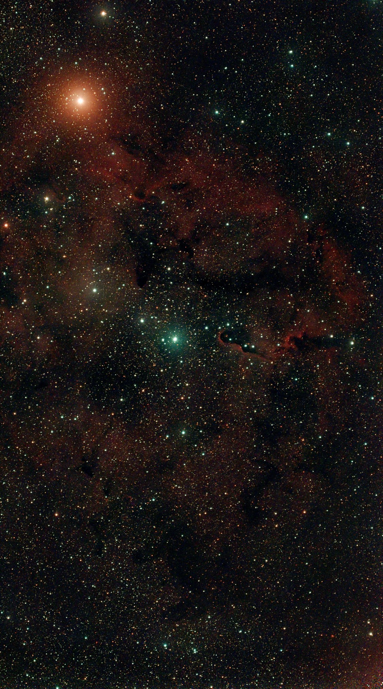

Night log · Sunday 11 October 2026
The Elephant's Trunk, after a false start
The plan
The forecast was mixed: one weather model cleared the sky from 21:00, another kept it patchy, a third had it overcast. With a 2% Moon it was worth a try, and worth trying something new: the Elephant's Trunk Nebula, IC 1396, in Cepheus.
IC 1396 is a huge, faint cloud of glowing hydrogen about 2,400 light years away, more than ten Moon-widths across in our sky. In the evening it climbs almost overhead, 84° up at 21:25, well clear of the house. The famous part is the "trunk": a column of dark dust and gas, several light years long, curling in from one side. Light from a hot young star at the nebula's centre is eating it away, and the edge facing that star glows. Inside the trunk new stars are still forming.
- Planned
- 20:30–00:00, IC 1396
- Extended
- to 05:00 on the night
- Settings
- 20 s · gain 200 · dual-band
- Moon
- New, 2%
- Mount
- TH10 wedge, EQ
A false start
I set the scope up, aligned it and went out for the evening. While it sat waiting for darkness, the telescope switched itself off. It turned out a power-saving setting in the phone app was on, and it shuts the scope down after a while with no one using the app. With me out, nobody could switch it back on, so the start of the night went by unused.
Back home at about 22:50 I switched it on again and turned that setting off. The first frames after the restart had smeared stars. Re-running the alignment in the app showed why: the scope was pointing about 7° away from the celestial pole, so the stars slid across the frame during each exposure. Nothing had moved since Saturday, so it had probably been out then too, which would explain Saturday's slightly stretched stars. A small turn of the wedge fixed it, and from 23:11 every frame had round stars. The sky was clear, so we extended the night to 05:00.
Results
It stayed clear until 01:47. Then cloud drifted over, and the scope paused itself and waited, checking every few minutes. There was a short gap around 04:15, enough for another 20 minutes, before the cloud came back for good. At 05:00 it took its dark frames and parked itself.
- Clear
- 23:11–01:47, 04:15–04:40
- IC 1396
- 390 × 20 s · 2 h 10 min
- Stacked
- 388 frames · 30 darks
- Lost to cloud
- about 2 h 40 min
The whole field shows IC 1396 as a faint red haze with dark lanes of dust running through it. The orange star at top left is the Garnet Star (Mu Cephei), a red supergiant so large that, in place of the Sun, it would reach out towards the orbit of Jupiter. The blue-white star just below centre is the hot young star that lights the nebula, and the trunk curls in from the right of it.

At full resolution the trunk itself is clear: a dark column of dust with a thin bright rim along its edge, where the starlight is boiling its surface away. It curls at the tip, which is where the "trunk" name comes from.

Two hours is not much for a nebula this faint. It's a target that rewards many hours, so it's going on the list for another night, and the frames from different nights can be combined.
What changed
The power-saving setting is now off, and the toolkit can now read it directly to check before a night starts. Before I trust it with another evening out, we'll test it properly: leave the scope waiting for an hour with me at home and make sure it's still awake.